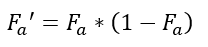
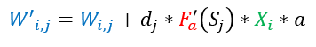
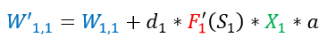

Имея ошибки нейронов теперь мы можем посчитать новые значения весов.
Но для начала нам нужно вычислить значение производной функции активации.
Для нашей функции активации она имеет вид:

Общая формула для корректировки весов нейронов, связанных с сенсорами выглядит следующим образом:

a явялется скоростью обучения.
Теперь подставим значение производной в описанную формулу выше и тем самым получим новое значение веса.
